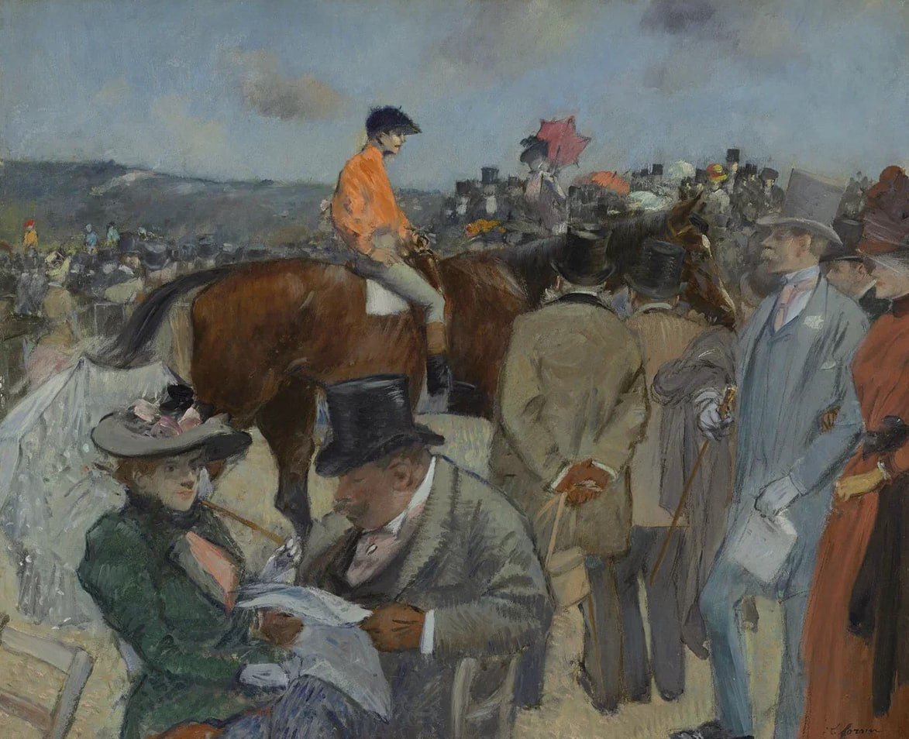

Жан Луи Форен
Les courses (Скачки), 1888

Холст, масло. 37,8 x 45,2 см
ГМИИ им. А.С. Пушкина, Москва.
История картины
- В ГМИИ с 1948
- до 1918 – собрание С.И. Щукина
- затем – в Государственном музее нового западного искусства до 1948. Картина Форена была написана под непосредственным влиянием пастелей Дега, изображающих скачки в Лоншане. Однако Форена, как мастера-жанриста, больше увлекают меткие саркастические характеристики моделей. Вокруг сидящего на лошади жокея толпятся игроки, обсуждающие ставки и просматривающие бюллетени скачек. Дамы демонстрируют свои туалеты и, по-видимому, больше интересуются объектами светских сплетен, а не тем, что происходит на ипподроме. Унаследованная от Дега точность в передаче движений у Форена оборачивается тонкой иронией, с которой мастер подмечает слабости и недостатки «светского общества». https://collection.pushkinmuseum.art/entity/OBJECT/78298